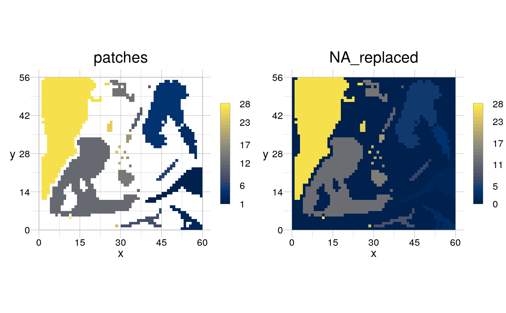

Assign a value to cells with NA
rFillNA(obj, with = 0)
| obj | [ |
|---|---|
| with | [ |
a RasterLayer of the same dimension as obj, where value
NA has been replaced by value with.
Other operators to modify cell values: rBinarise,
rCategorise, rDistance,
rOffset, rPermute,
rRange, rSubstitute
input <- rtData$continuous patches <- rPatches(rBinarise(input, thresh = 30)) visualise(raster::stack(patches, rFillNA(patches)))